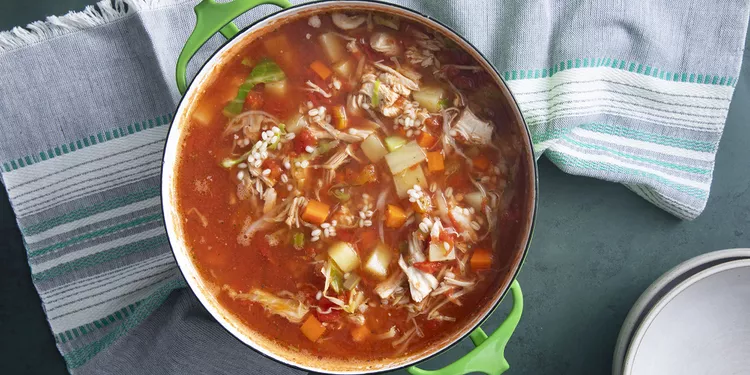

Turkey Carcass Soup

Delicious Turkey Carcass Soup
This recipe prevents you from throwing your turkey scraps away! Use your leftover turkey from Thanksgiving. This quick and easy recipe is easy for anyone to follow.
Ingredients
- 1 turkey carcass
- 4 cups water
- 1 can whole peeled tomatoes, chopped
- 6 small potatoes, diced
- 1 large onion, diced
- 2 stalks celery, diced
- 1 ½ cups shredded cabbage
- 1 tablespoon Worcestershire sauce
- 1 ½ teaspoons salt
- 1 teaspoon dried parsley
- 1 teaspoon dried basil
- 1 large bay leaf
Steps
- Place turkey carcass into a large soup pot; pour in water and bring to a boil over medium heat. Reduce heat to a simmer, and cook until the remaining meat falls off the bones, about 1 hour.
- Remove turkey carcass from the pot. Remove and chop any remaining turkey meat. Discard carcass.
- Strain broth through a fine mesh strainer into a clean soup pot. Add chopped turkey to the strained broth and bring to a boil.
- Reduce heat and stir in tomatoes, potatoes, carrots, onion, celery, cabbage, barley, Worcestershire sauce, salt, parsley, basil, bay leaf, pepper, paprika, poultry seasoning, and thyme. Simmer until vegetables are tender, about 1 more hour.
- Remove bay leaf before serving.
Back Home